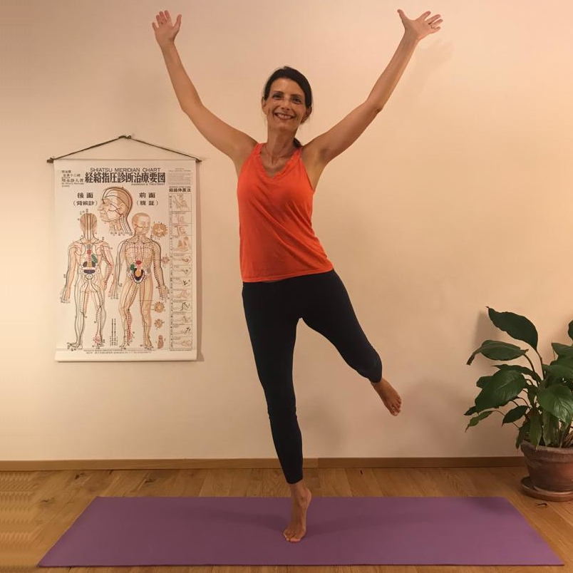
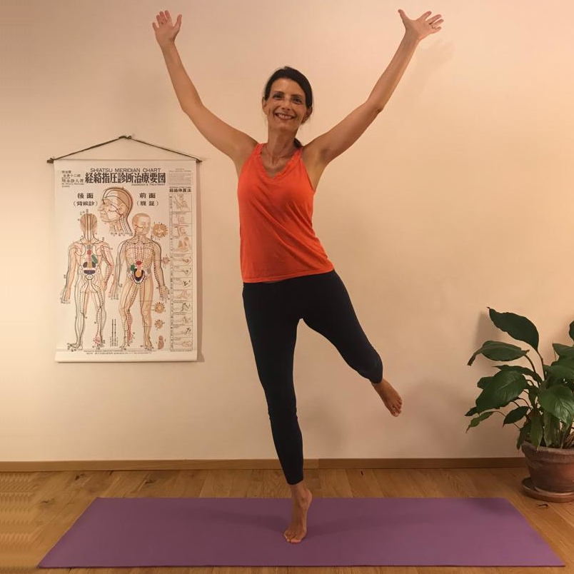

Zen Stretchinge


che cos'è.
La Incontri settimanali di esercizi per la salute, derivati dallo Shiatsu e dal do-in, secondo gli studi del maestro Shizuto Masunaga. Sono esercizi facili e adatti a tutti, che attraverso l’allungamento e l’auto-massaggio lungo i Meridiani Energetici, l’uso corretto del respiro e il rilassamento, aiutano a ritrovare benessere, energia e calma.

I percorsi di Psicomotricità Relazionale prevedono lo sviluppo del gioco psicomotorio nei suoi 3 aspetti principali:
- IL GIOCO SENSOMOTORIO
- IL GIOCO SIMBOLICO
- IL GIOCO DI SOCIALIZZAZIONE
i Meridiani Energetici
Secondo la medicina tradizionale estremo orientale, i Meridiani Energetici sono i “canali” attraverso cui scorre l’energia vitale. Sono come fiumi che fluiscono in tutto il corpo.
Ogni Meridiano presiede a specifiche funzioni vitali, che riguardano tutti i piani della persona: corpo, emozioni, mente, spirito.
Lo stress quotidiano e gli eventi traumatici creano squilibri in questa circolazione. Il flusso di energia subisce una “strozzatura”. Se la situazione si cronicizza, si manifestano disturbi e malattie: i sintomi che richiamano la nostra attenzione sul problema.
i benefici dello zen stretching
Stimolare i Meridiani tramite l’allungamento e l’auto massaggio riporta equilibrio nella circolazione energetica, stimolando il corpo a curare se stesso. Gli effetti benefici sono riscontrabili sui diversi piani della persona:
- - flessibilità articolare
- - risposta immunitaria più forte
- - benessere degli organi
- - migliore digestione
- - sonno più riposante
- - mente più calma
- - cuore più leggero
benessere take away
I movimenti dello zen stretching si imparano facilmente: dopo un ciclo di incontri sarai abbastanza autonomo da poter riprodurre una sequenza di 10/30 minuti a casa al mattino o alla sera sul tuo tappetino, ma anche per poter spezzare la giornata lavorativa durante la pausa caffè. Bastano una parete, un tavolo o una sedia per riprodurre alcuni dei movimenti che senti siano più utili per te in questo momento.
 

il valore di prevenzione
Nell’antica Cina il medico si impegnava a mantenere in salute i suoi assistiti e solo in questo caso veniva pagato: la medicina tradizionale orientale è soprattutto preventiva.
Secondo questo approccio il sintomo è l’effetto visibile di una causa invisibile.
La causa del sintomo risiede sempre sul piano energetico. Pertanto se lo squilibrio viene curato per tempo, per esempio con lo Shiatsu o lo Zen stretching, stimolando il riequilibrio energetico “dall’interno”, potrebbe non arrivare mai a manifestarsi sul piano fisico o emotivo.
come si svolge la lezione
Gli incontri partono con una sequenza di riscaldamento, per poi dedicarsi alla stimolazione dei diversi Meridiani e terminare con un rilassamento guidato. Occorre portare un tappetino e una copertina da ripiegare come supporto. E ovviamente abbigliamento comodo!